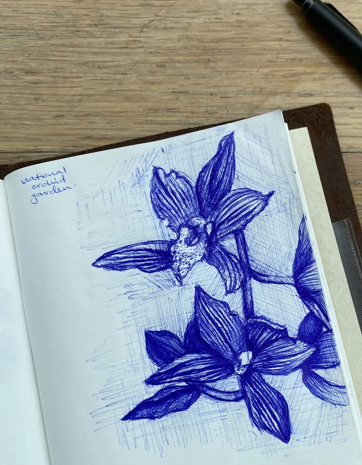
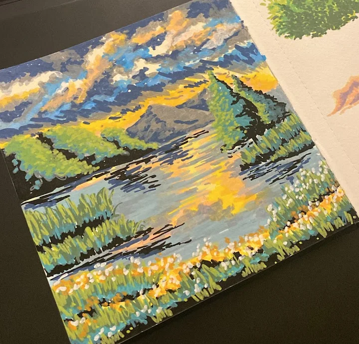
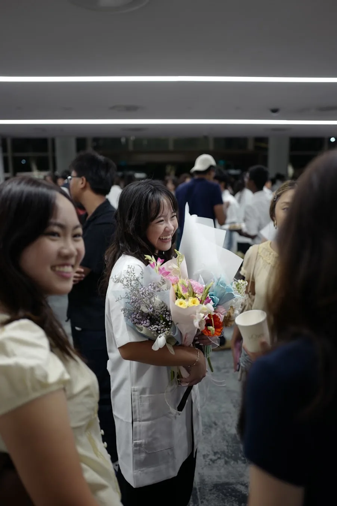
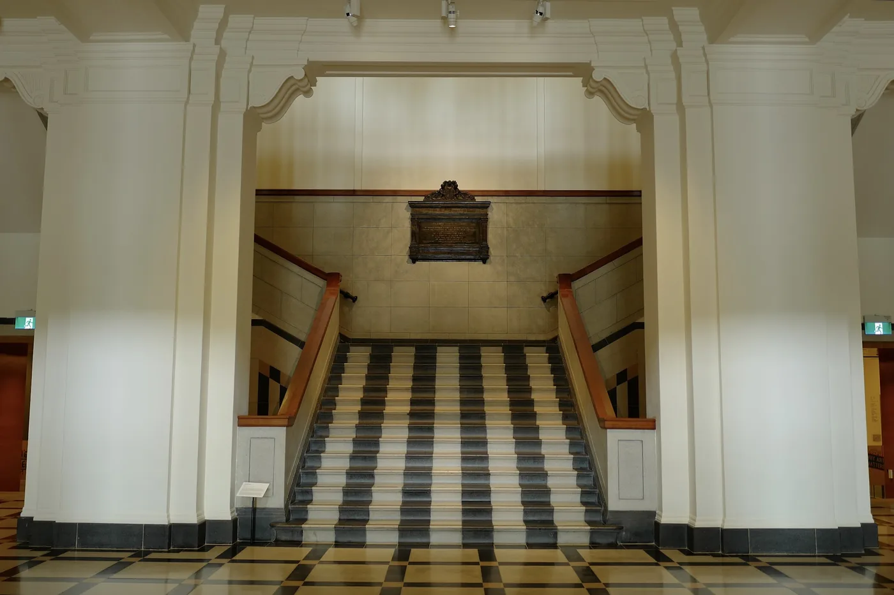
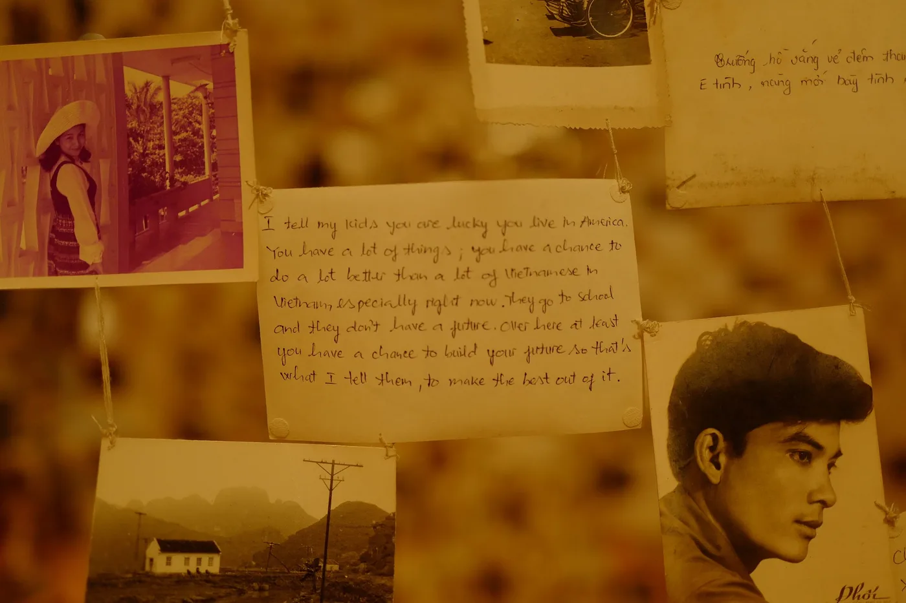
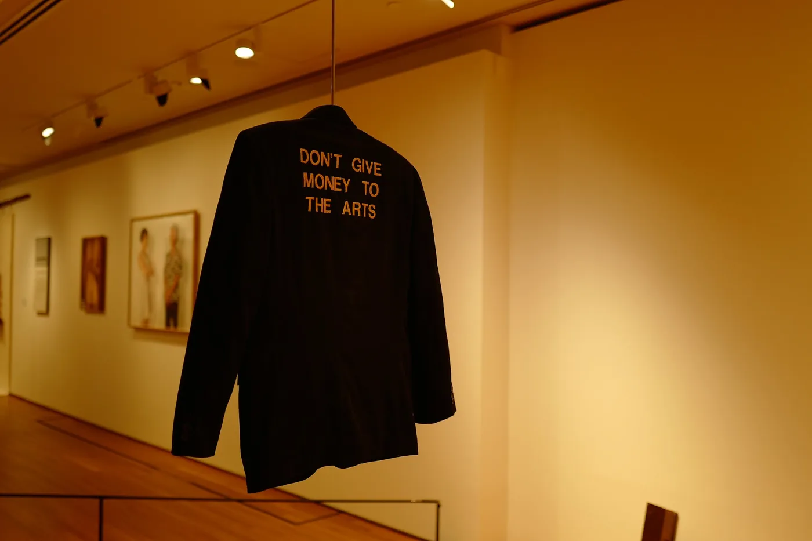
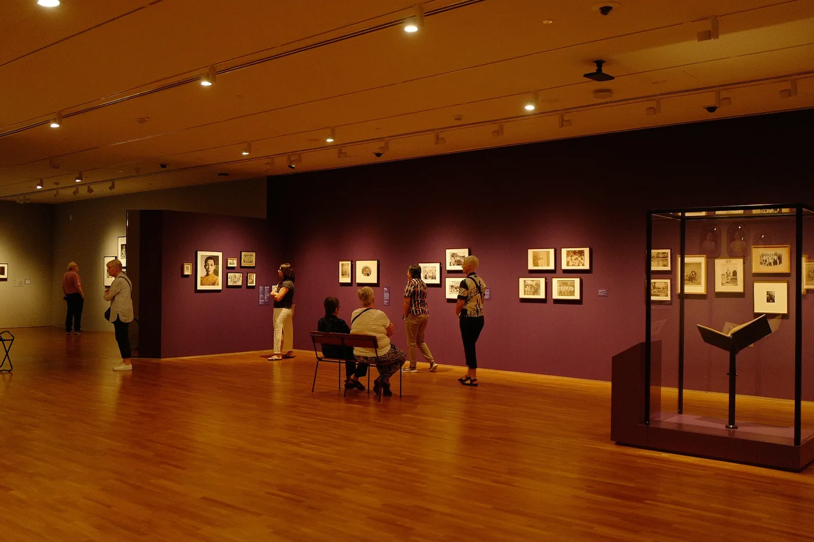
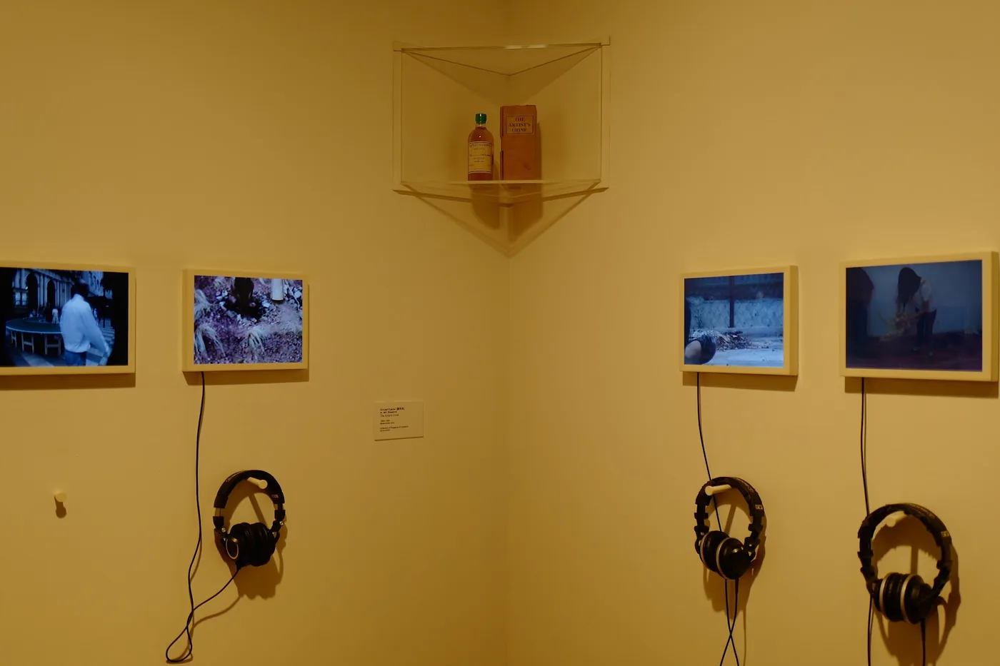

Start with the audience
Kiko’s pivoted to cute cards for girls who collect for the art. Knowing exactly who it’s for made every post easier to write.
Based in
Singapore, camera in handAlways carrying
A pen, a sketchbookRunning
Kiko’s Café, a smallOkay, maybe a few more than some. Here’s where my points are spent so far.
I shoot and edit my own photos and video, from every Kiko’s listing to our card game’s gameplay video.
Kiko’s Café: a café-themed voice, 19 themed drops and 1,086 cards sold, in profit.
Interviews, personas and journey maps for every project, so the work starts from real people.
Flows and hi-fi prototypes in Figma. I know how what we promise turns into what people actually use.
At DBS I automate report runs and monitor with ELK dashboards. I like numbers that tell you what to do next.
Claude for research and drafts, Perplexity to brainstorm, Gemini for images. I check everything they make.
Kiko’s pivoted to cute cards for girls who collect for the art. Knowing exactly who it’s for made every post easier to write.
Every project has a number to watch, from drop-night sell-through to taps saved in a flow. If it doesn’t move, I change course.
PayNow, hawker queues, Singlish microcopy. Local details make a brand feel like it belongs.
A Pokémon card shop on Instagram, TikTok and Telegram. Co-run with my partner. I lead card selection, drop themes, photography, listings and our Instagram and TikTok; my partner runs finance. $1,778 revenue and +$842 profit since April.
Global Financial Markets Technology. Automating report runs, job schedules and email alerts with Bash and Power Automate; monitoring with ELK; UAT testing.
The bridge between our programmers and the UX designers: I turned designers’ workflow needs into features, and built a Unity-style level editor with them as the users.
Led a team of 8. Built the input and physics systems and the level editor tools.
Bachelor of Science in Computer Science in Interactive Media and Game Development.
A two-month holiday shop for handmade satin hair accessories. I made the products, shot every photo and ran Instagram and TikTok: $200+ in sales, and Jo Malone London asked to feature one of my photos.
GCE A-Levels, including Art. Before that, Art at O Level too.
When I’m not pushing pixels, you’ll find me with a pen in hand, out with my camera snapping whatever catches my eye, at the piano working out a song by ear, or wandering around a museum.
I draw with dry media, mostly ballpoint, fineliners and colour pencils. Slow, scratchy and very forgiving of a shaky hand. Flowers keep sneaking in, including the same orchids I photograph.


For my A Level art coursework I experimented with animation: tracing a figure frame by frame until a few white lines start to run, kneel and wave. It was my first taste of designing for motion.
To unwind, I sit down at the piano. No lessons, just patience, YouTube and a lot of replaying the same bar. Please be kind!
I take my camera everywhere and take pics of whatever makes me stop: orchids, staircases, the odd suspicious bottle in a gallery corner, and the moments that matter to the people I love. You be the judge haha.






Contact